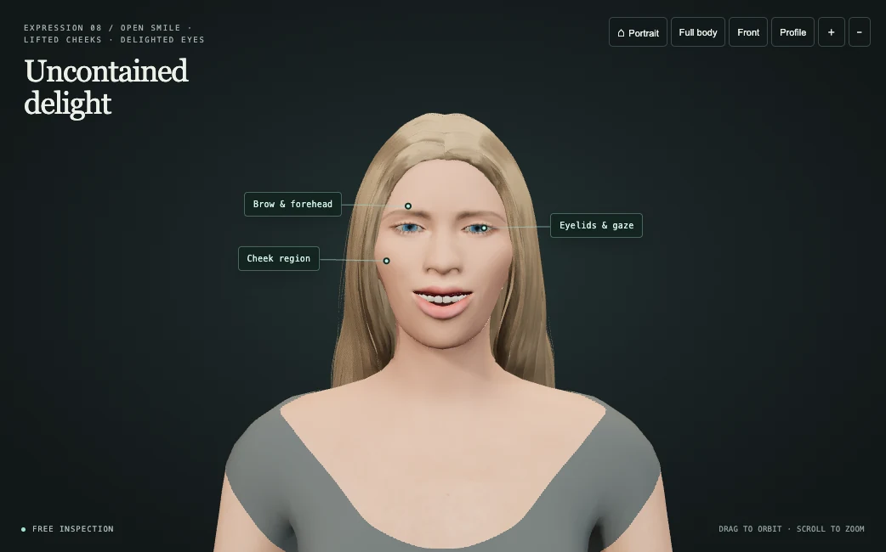
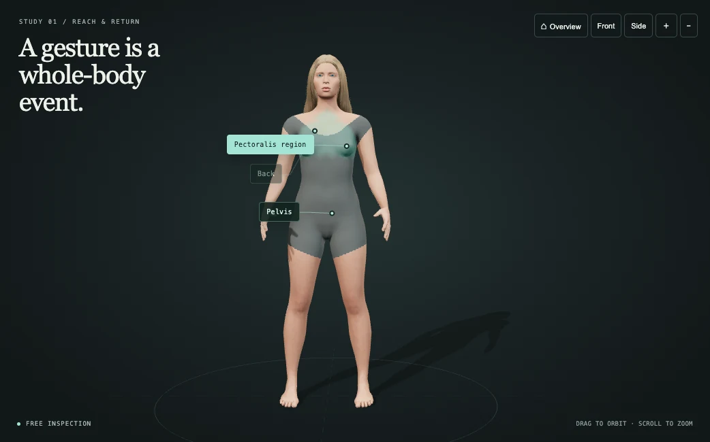

MUSE + FORM / INTERACTIVE CHARACTER STUDIES
Study expression.
Understand movement.
One character. Two ways to look closer. Explore a gesture from every angle, pause its movement, and follow the shapes that make it work.

MUSE ↗
08 EXPRESSIONSThe language of a face. Follow the brows, eyes, cheeks, lips and jaw through eight acting studies.

FORM ↗
05 MOVEMENTSAnatomy in motion. Inspect the full body, arm, hand, leg and foot through controlled five-second movements.
The project, in four chapters.
Read the overview, follow the experiments, and compare the animated studies. Each document opens on GitHub with its source material and archive links.
Project overview ↗The idea, current features, setup and reusable authoring skills.
Development study ↗From the first drawings to the shared 3D character, with collages and prompts.
Body movement ↗Animated FORM studies and the movement experiments that preceded them.
Facial expressions ↗Animated MUSE performances, earlier expressions and refinement prompts.